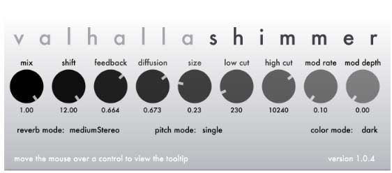
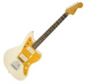
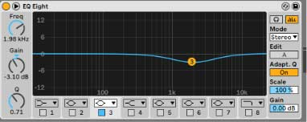
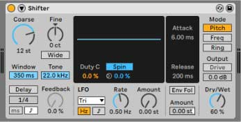
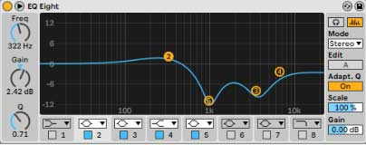
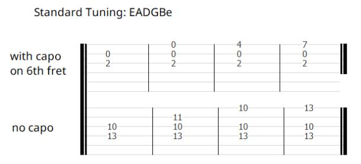
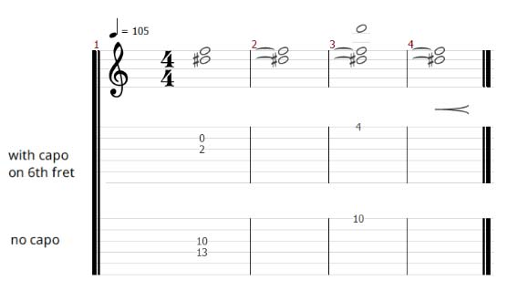

Ambient Guitar Tutorial: Some Other Time
This tutorial goes in depth on how to recreate the ethereal ambient guitar sound of Some Other Time, from the Ghost In The Shell Stand Alone Complex OST. We'll see the effects used and tabs, but most importantly the idea behind this style of playing.
This work was created as a commission on Fiverr. You can request a similar tutorial for any song you want by sending me a message. If you have any question, don't hesitate to contact me at alessioferraioli@hotmail.it.
Contents
Signal Chain
The main effect used is a 100% wet shimmer reverb. The guitar is fed through the shimmer reverb, but only the sound of the reverb is heard. Recreating the vibe of this sound requires very few effects, so I will provide you an “essential” signal chain, which you can use to have a working version of the sound you can use to experiment in your songs and customize as you like. If the goal instead is to get a sound as close as possible to the example, other elements are involved.
The second signal chain includes more effects to produce a more accurate recreation of the sound. You can use this signal chain as an inspiration to mimic not only the type of sound but also the specific tone used.
The third signal chain is “asynchronous”, meaning that the sound cannot be played in real time because it involves multiple tracks. This is the approach you would use in the mixing process.
Signal Chain 1: Core of the sound
The essential version of the signal chain includes only a Shimmer Reverb (see section Shimmer Reverb for more details). The sound is direct, meaning that there is no amplifier, no cabinet, no microphones: the guitar goes straight into the reverb, and its output is recorded directly. If you are playing live, either plug the output of the reverb directly into the mixing board or, if you’re using an amp, set it to be as transparent as possible.
There are a lot of shimmer reverb effects, both hardware and software. I am using the Valhalla Shimmer VST, which is extremely versatile. However, each reverb uses a different algorithm, so the details of the sound may vary.
These are the settings I’m using. Note that all the settings interact with each other with complex dynamics, so changing one knob would influence how the other parameters interact. The first two knobs, mix and shift, must remain exactly where they are to achieve the sound. The following three knobs (feedback, diffusion, size) are the soul of the reverb and varying them can have dramatic effects on the sound. All the other parameters are for refining the sound, so you can use my settings as loose indications to experiment with them.
- mix: 1.00: this controls the ratio of the volume of the original sound (the dry guitar) and the volume of the reverb. Having this knob at 1.00 (100%) means that only the reverb is heard.
- shift: 12.00: this is the amount of semitones of the pitch shifter, and setting it to 12.00 would shift the notes up by octaves, because one octave is 12 semitones.
- feedback: 0.664: this controls the percentage in volume of the sound that gets fed back to the reverb after being shifted. A higher value like 0.664 produces a lot of higher overtones.
- diffusion: 0.673: this is a complex parameter that controls the diffusion of the reverb, i.e., the density of the individual delay trails that made up the reverb. Higher values produce a softer, more complex reverb with a mellower attack.
- size: 0.23: this is the length of the reverb trails. A higher value means that the reverb takes more time to build up and fade away. Here, I’m using a smaller value because I want the stacking up of the shifted octaves to happen rapidly.
- low cut: 230: this cuts the low frequencies in the input. I’m keeping it fairly low to not cut much of the sound of the guitar, mostly getting rid of unwanted low noises and rumbles.
- high cut: 10240: this cuts the high frequencies in the input. I’m using it to just remove the highest frequencies of the guitar, which are mostly picking noises.
- mod rate: 0.10: this knob controls the speed of the modulation included in the reverb; since I’m not using any modulation (mod depth is at zero), this knob has no effect
- mod depth: 0: this knobs controls the depth of the modulation included in the reverb; I don’t want any modulation, so I set it at zero.
- reverb mode: mediumStereo: this parameter selects between a few reverb algorithms with different stereo spreads. I’m using this one, which has a nice stereo field, but it is not extremely wide.
- pitch mode: single this parameter controls how the pitch shifter works, “single” mode is the basic mode in which the note gets simply shifted by the amount selected with the shift knob.
- color mode: dark: this switches between two styles of the reverb, bright and dark.
Signal Chain 2: Recreating the tone
The specific tone of the sound depends on the actual tone of the reverb used and of the source. I don’t know which reverb is used in the original song, and I also don’t know what the source was. Each guitar has a particular tone that makes the reverb react differently. Since the reverb is all we are hearing, it is completely possible that it was not even a guitar but maybe another instrument with a different timbre. However, this signal chain is an attempt to recreate the tone. I suggest using this as an inspiration to understand the ideas behind the sound, which are more useful than the exact settings: each guitar is different and might need different settings.Signal Chain: Guitar → Equalizer → Pitch Shifter → Shimmer Reverb → Equalizer → Delay
The additions in this signal chain are two equalizers, used to remove part of the mids of the guitar, which is a very mid-focused instrument, a pitch shifter, for additional higher octave notes, and a delay, to prolong the sound even further. I am using the stock effects included in Ableton Live, but any other will do (I will include at the end a “stompboxes version” of this signal chain).
Guitar: Squier VM Jazzmaster J Mascis Signature (stock)
Really any guitar will do, but maybe higher output humbuckers are less suitable because of the darker and more mid-focused sound.
Equalizer: Ableton Live EQ8
This is used to tame the mid frequencies of the guitar around 2k Hz before hitting the reverb.
Pitch Shifter: Ableton Live Shifter
This is used to shift the pitch up by 12 semitones (one octave). This is combined with the non-shifted sound by setting the Dry/Wet knob to 60%, so we are hearing 60% of the higher octave and 40% of the lower octave. This is used to produce additional high notes that go into the reverb, increasing the stacking of the octaves.
Shimmer Reverb: Valhalla Shimmer
Same settings from Signal Chain 1.
-
Equalizer: Ableton Live EQ8
This equalization curve that looks crazy is used to alter the sound of the reverb drastically, removing most of the mid-frequencies while boosting the lowest part. There is also a small cut in the highest frequencies to remove hissing noises. Usually, such an EQ curve is avoided because it will inevitably destroy the original sound, but, in this case, we want to get something wildly different from a standard guitar. The basic idea is to scoop out the mids from the guitar, which is mid-focused. Don’t use this kind of EQ for any “regular” guitar sound!
-
Delay: Ableton Live Delay

I used a very simple delay at the end to increase the length of the sound since the reverb I used has a very small size and decays quickly.
Example of the signal chain with pedals
Boss GE-7 or Behringer EQ700 → ElectroHarmonix Micro Pog or Behringer FX600 → Strymon BlueSky or M-VAVE Mini Universe → Boss GE-7 or Behringer EQ700 → Boss DD-8 or TC Electronics The Prophet
Signal Chain 3: Multiple tracks
In the mixing phase, you can have more control over the tone by splitting the sound over multiple tracks with individual processing. In my case, I used three copies of the same guitar performance: the first one as is, the second one shifted an octave up, and the third one shifted two octaves up. Pitch shifter algorithms work better not in real time, so in this way, I can have a clearer version of the shifted sound. I do not suggest playing multiple versions of the part over different octaves of the guitar because the tracks would be less locked together and also, the shifted sound of the guitar helps produce a different, more synth-like timbre.
The signal chain is very similar to Signal Chain 2, but now I don’t have the shifter in the chain. The settings of the equalizer are slightly different for each track, but the core ideas remain the same.
Playing Style
Playing with a 100% wet shimmer reverb is different from normal guitar playing because the attack of the note gets blurred and the decay is extended by a lot. The sound of the guitar is usually bound by the natural decay of the string, which starts with a very short peak of volume then decays in volume, and it is not possible to extend the sustain of a note “mechanically”. For this reason, sustaining a constant tone is impossible with a standard guitar. With a 100% wet reverb, you can do it: by picking a note multiple times, you would not hear several distinct notes but one constant tone. This means that you can sustain a note indefinitely by continuously picking the string in a sort of tremolo-picking style. Experimenting with the sound, you will find that the intensity and the frequency of the picking greatly influences the sound, not only in volume but also in tone and brightness. The reverb is very responsive to the variation of the input, so you can control the expression by changing the way you pick.Musical elements
Musically, the part is composed of a few tasteful elements. There is a chord made of just two notes, Eb and F, that is constant for practically the entire song, with an occasional increase or decrease in volume. This works as a nice tension that enriches all the chords while giving them a common ground. Over this constant drone, other higher notes (Bb, D, F) sporadically appear as accents.Pick or Fingers
I am playing with a pick, but there is no rule; playing with a pick lets you play tremolo picking easily and with a greater control over volume and speed, while playing with fingers gives you better control of individual strings.Tabs
Since the part is made of very few elements, one of which is a constant sound for the entire song and the other are occasional accents, bar-per-bar tabs would not be so easy to follow. Instead I’m writing all the few shapes you’ll need for the song, and tips for when they appear in the song. Then, you can use the video or listen to the song to follow them.
I found that using a capo on the 6th fret makes the fingerings easier so I’m including both the version with and without capo.
The first shape is the chord made of Eb and F, the two notes that are constant in the entire song. They sometimes increase a lot in volume for example in the intro. The other notes get added to these two notes, creating the other three shapes. Those are, respectively, the chord with a Bb on top, with a D on top, and with a F on top.
For example, the intro is:
Note that even if I’m writing long notes, in reality you have to pick the strings continuously in order to sustain the sound, as I mentioned before.
Then the song is pretty straightforward: the notes D (third shape) and F (fourth shape) appear sometimes during the verse. The note F (fourth shape) is also present constantly during the chorus, although it is very faint. The note Bb (second shape) appears during the volume swells at the end of the verses.
Since the part is very sparse and the notes Eb and F are constant throughout the song, I don’t think bar-per-bar tabs would be very useful and easy to follow. My advice is to listen to the song to capture when the three higher notes come in.Additional Info: Shimmer Reverb
The main ingredient of the sound is a shimmer reverb. A shimmer reverb is a reverb in which the reverb tails go through a pitch shifter and are then fed back again to the reverb, creating a feedback loop. This creates a sound in which the reverb tails get shifted in pitch repeatedly while new tails are being created. For example, if the pitch shifter moves the reverb trail one octave higher, than this higher note is used to create a new reverb trail, that gets shifted of another octave (two octaves higher than the original sound) and so on.
The first shimmer reverbs were achieved in the 80s by combining a digital reverb with a separate pitch shifter. Starting from the 90s, many products included a shimmer reverb in a single effect unit, such as the Digitech SpaceStation. In the late 2000s/early 2010s the effect became really popular and has been included in many effects units, with popular stompboxes such as the Strymon BlueSky or softwares such as the Valhalla Shimmer.
This work was created as a commission on Fiverr. You can request a similar tutorial for any song you want by sending me a message. If you have any question, don't hesitate to contact me at alessioferraioli@hotmail.it.